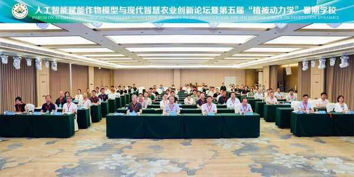
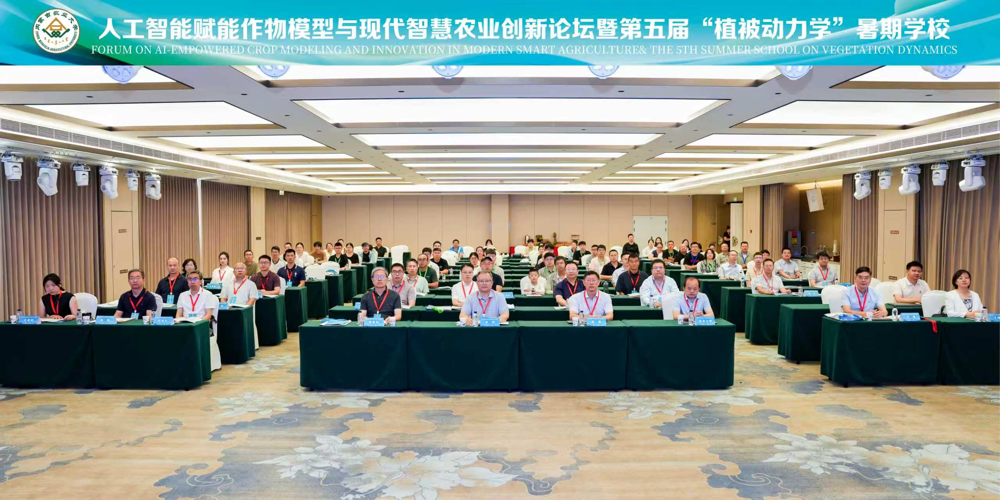
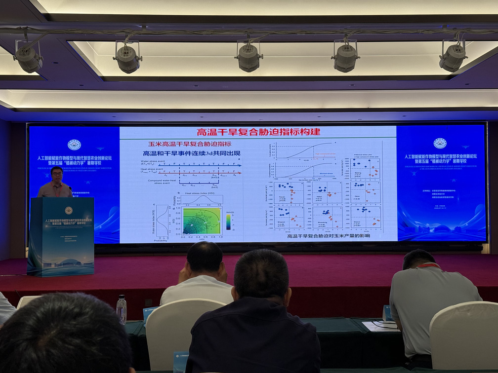
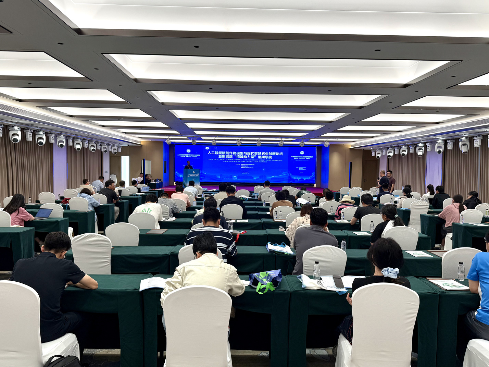
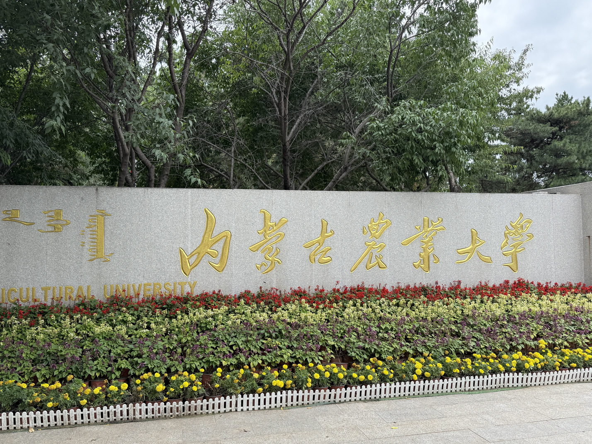
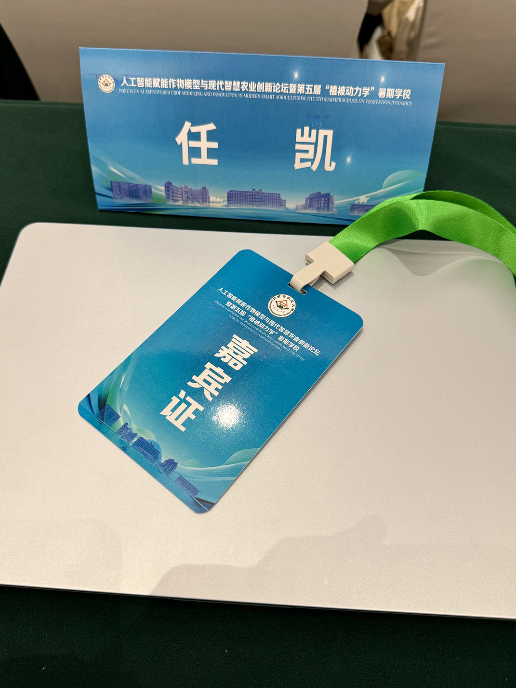
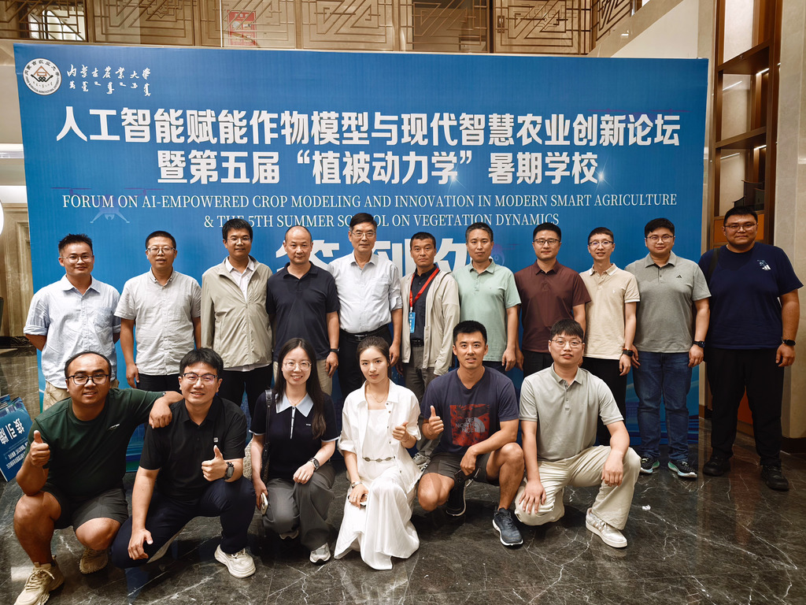
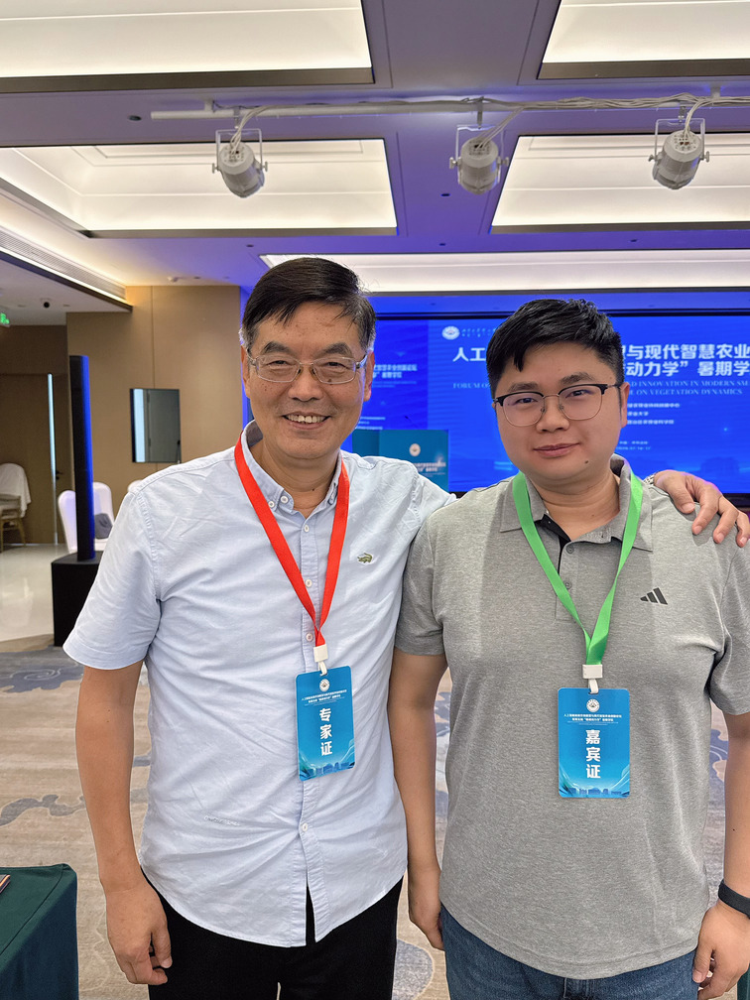
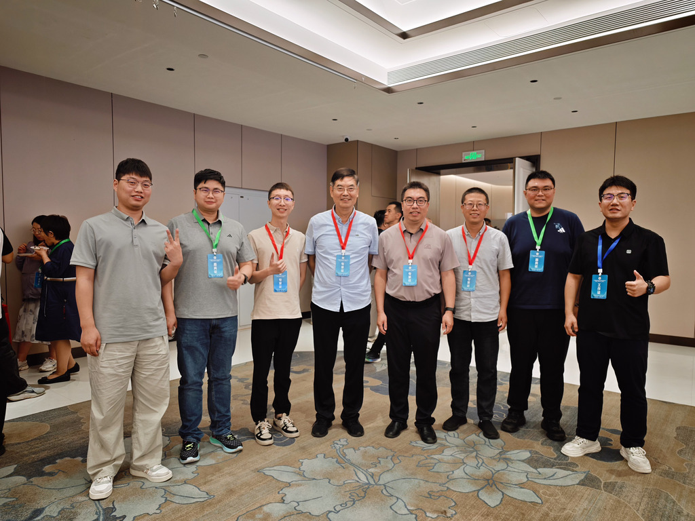

Academic Exchange
Attending the AI-Empowered Crop Modelling Forum and Vegetation Dynamics Summer School
From 14 to 17 July 2026, I was invited to attend the Forum on AI-Empowered Crop Modelling and Innovation in Modern Smart Agriculture and the 5th Summer School on Vegetation Dynamics at Inner Mongolia Agricultural University.

Forum and Summer School
The four-day programme brought together researchers and students working across crop modelling, artificial intelligence, smart agriculture, and vegetation dynamics. The forum connected methodological discussions with the practical challenges of understanding crop growth and supporting modern agricultural decision-making.
Alongside the main forum, the 5th Summer School on Vegetation Dynamics created a focused setting for learning and exchange. Technical presentations and discussions offered a useful view of how process-based crop models, data-driven methods, and environmental observations can complement one another.



At Inner Mongolia Agricultural University
Inner Mongolia Agricultural University provided a fitting setting for the event. The visit combined an intensive academic programme with opportunities to meet researchers from different institutions and continue conversations beyond the formal sessions.


Meeting Professor Qiang Yu
A particularly meaningful moment was meeting my PhD supervisor, Professor Qiang Yu, in person at the event. Although his guidance has been central to my academic development, this visit gave us our first photograph together.
The gathering also offered an opportunity to reconnect with members of Professor Yu's research group. These shared moments made the visit more than a formal academic event: it was also a warm reunion built around a common interest in crop science, modelling, and agricultural research.



The forum and summer school were a valuable opportunity to learn from current work in crop modelling and smart agriculture, renew academic connections, and mark a memorable meeting with my PhD supervisor and his research group.